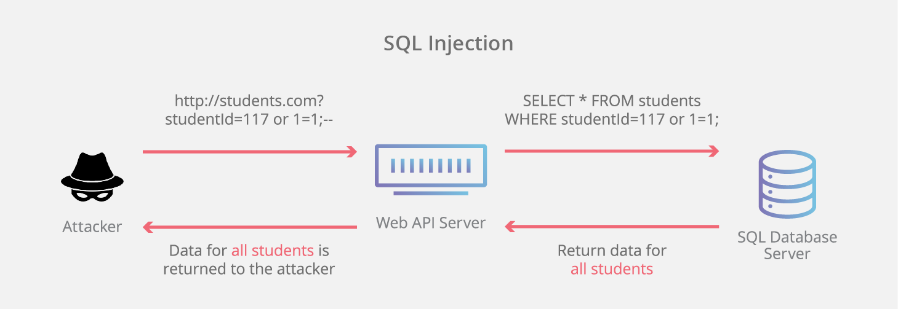
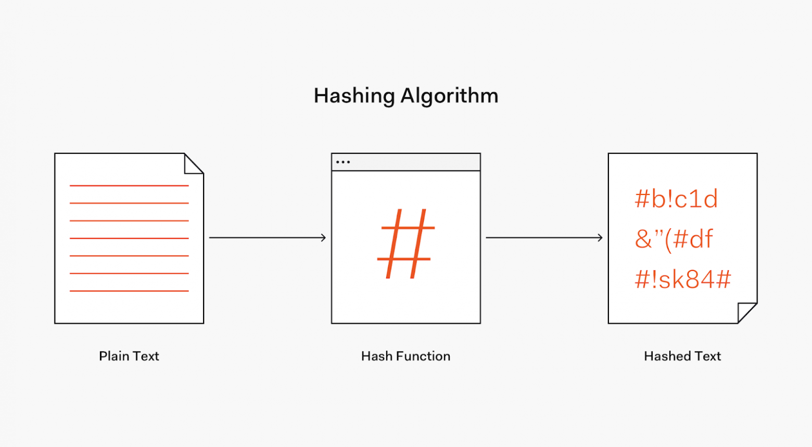
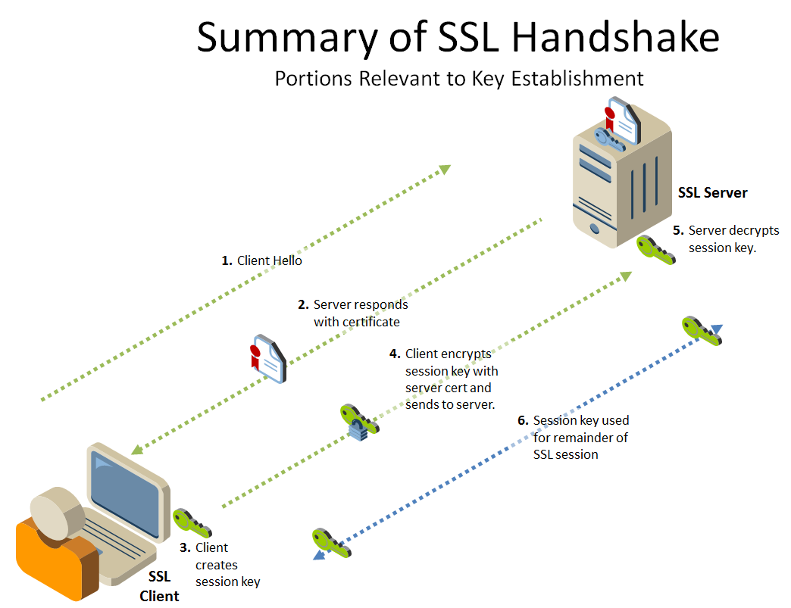
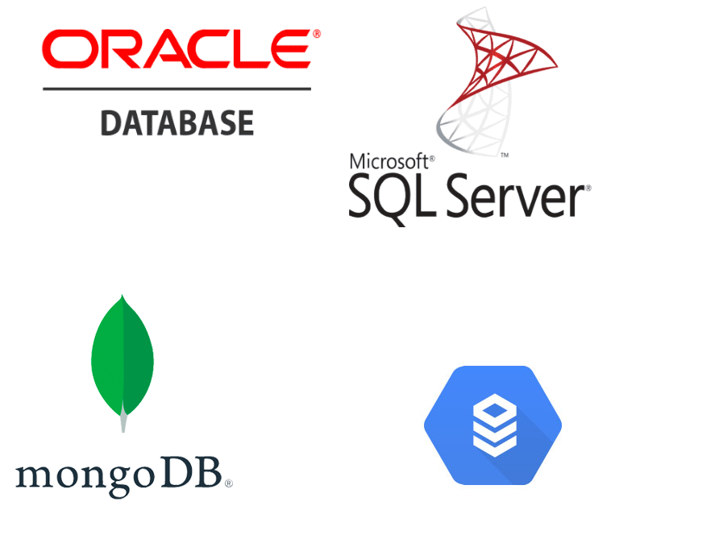

Безопасность в базах данных
Базы данных до сих пор является основным решением для хранения информации. При всем своем удобстве, практичности использования БД отличаются немалым числом уязвимостей, которые требуют привлечения дополнительных решений для обеспечения безопасности и защиты базы данных.
Безопасность баз данных — это как щит, защищающий сокровища, которые хранятся внутри. Изначально базы данных были направлены на сбор и хранение данных. Это стало крайне удобным инструментом, позволяющим легко и быстро получать и обрабатывать информацию. Однако, с появлением многих проблем, связанных с безопасностью БД, мы должны обеспечить надежную защиту нашей информации.
Обеспечение безопасности баз данных имеет огромное значение в нашей современной цифровой эпохе. Она защищает наши данные от несанкционированного доступа. К примеру мы можем рассмотреть какую угрозу для них могут представлять хакеры, которые могут попытаться проникнуть в базу данных, чтобы получить доступ к личным данным пользователей или финансовым средствам компании.
Кроме того, безопасность баз данных помогает защитить нашу информацию от неожиданных сбоев системы, к которым может привести хранение большого объема данных. В случае, если база данных не обеспечена должным уровнем защиты, все эти данные могут быть утеряны.
Самые распространенные угрозы
Основные угрозы, с которыми сталкиваются базы данных, включают в себя:
SQL-инъекции. Подразумевают взлом через поле ввода путем интеграции вредоносного кода. На практике встречаются инъекции типов SQL и NoSQL. Первые характерны для классических СУБД, вторые затрагивают платформы на основе Big Data. SQL-инъекции более массовые и распространенные ввиду огромного числа СУБД упрощённого типа. NoSQL-инъекции носят более сложный и направленный характер, т.к. проникают через определенные входные точки или отдельные компоненты по типу Hive или MapReduce. В обоих случаях при взломе БД через вводные инъекции злоумышленники получают практически неограниченные возможности для манипуляций данными.
Взлом паролей — это атака, при которой злоумышленник пытается угадать пароль или использовать слабые пароли для получения доступ к базе данных. Взлом паролей может быть автоматизирован, используя программы для перебора паролей(брутфорс), что позволяет злоумышленнику быстро найти правильный пароль и получить доступ к ценной информации.
Атаки киберпреступников становятся все более сложными и изощрёнными: фишинг, подмена данных, вредоносные ссылки, коды. Многие из них носят замаскированный и неявный характер, что вводит в заблуждение пользователей, слабо ознакомленных с политиками и правилами информационной безопасности. Тем самым риски хакерских угроз носят непредсказуемый характер, способны привести к многочисленным инцидентам безопасности и самым тяжёлым последствиям для компании, если технология защиты баз данных отличается несовершенством.
Несанкционированный доступ к данным — это когда злоумышленник получает доступ к базе данных без разрешения владельца или администратора базы данных. Это может происходить путем использования слабых паролей или уязвимостей в системе безопасности. В результате злоумышленник может получить доступ к конфиденциальной информации и использовать ее в своих корыстных целях.
В истории есть масса проблем, связанных с безопасностью баз данных. Одной из самой известной является атака на базу данных Equifax в 2017 году, когда злоумышленники украли личную информацию более чем 143 миллионов человек. Эта атака произошла из-за невообразимо слабых паролей и уязвимостей в самой системе безопасности.
Использование старых версий или неудачных конфигураций БД. Главной проблемой здесь являются морально устаревшие БД, которые эксплуатируются в виде как есть. Кроме того, отсутствуют регулярные обновления и патчи. Такой подход к обслуживанию информации делает ее легкодоступной и накапливает уязвимости со временем. Главными причинами такого отношения к БД и накоплению проблем являются необходимость отключения информации от рабочего процесса и длительность обновления.
Методы защиты баз данных
Ввиду многообразия внешних угроз и внутренних уязвимостей защитные меры проводятся комплексно и направлено. Широко используемыми вариантами защиты БД считаются:
Шифрование и хеширование
Шифрование. Применяется с целью подмены или преобразования исходных данных или отдельных информационных блоков, что затрудняет правильную идентификацию сведений и построение их в единое целое. Также в качестве дополнительной меры используют ключи шифрования без которых представляется невозможным использование украденной информации. Шифрование может быть симметричным и асимметричным, на уровне базы, отдельных приложений. Достоинством шифрования считается возможность создать защиту одновременно на нескольких уровнях: информация, алгоритмы, функционал. У такой защиты присутствует обратная сторона - усложнение управлением БД, увеличение сроков обработки сведений из-за необходимости проведения дешифровки.
Хэширование паролей — это один из популярных методов аутентификации. Вместо того, чтобы хранить пароль в базе данных в открытом виде, пароль хэшируется с использованием специального алгоритма хэширования и хранится в виде хеш-значения. Хэш — это сложный алгоритм, который используется для создания уникального и кодированного значения для каждого пароля.
Использование SSL/TLS-шифрования. Во время передачи данных через сеть, данные могут быть перехвачены злоумышленниками, которые могут получить доступ к ним, но при использовании SSL/TLS-шифрования данных это становится практически невозможным. SSL/TLS-шифрование использует специальные сертификаты и протоколы для шифрования данных и защиты их от несанкционированного доступа.
SSL/TLS-шифрование обеспечивает безопасность данных, передаваемых через Интернет, и защищает от кибератак и хакеров. Это важный метод защиты данных, используемый в большинстве web-сервисов и приложений. Разработчики и администраторы баз данных должны убедиться, что SSL/TLS-шифрование используется для всех передач данных между клиентом и сервером для обеспечения максимальной безопасности и защиты данных
Методы авторизации в базах данных
В настоящее время даже с самыми развитыми системами информационной безопасности, у пользователя все еще есть возможность получить несанкционированный доступ к базе данных, который может привести к нарушению конфиденциальности данных и многим другим проблемам.
Права доступа на уровне базы данных.Этот метод авторизации управляет доступом к базе данных через систему прав доступа на уровне базы данных. Программист или администратор базы данных могут управлять уровнями доступа к базе данных, чтобы пользователи могли получить доступ только к определенным частям базы данных.
Права доступа на уровне базы данных позволяют ограничивать доступ к конкретным таблицам или частям таблиц, а также определять права на чтение, запись и редактирование данных в той или иной таблице. Таким образом, пользователи смогут получать доступ только к тем данным, которые им необходимы, а не ко всей базе данных.
Разделение прав доступа на уровне приложенияВторым методом авторизации является разделение прав доступа на уровне приложения, где права доступа управляются из приложения, а не непосредственно из базы данных. Этот метод иногда называют методом ролевого доступа, т.к. пользователи должны быть присвоены определенную роль, чтобы получить доступ к приложению и его функциональности.
Этот метод авторизации контролирует доступ к приложению, а не к базе данных. Это означает, что пользователи могут получать доступ к приложению, но они не смогут получить доступ к данным в базе данных, если у них нет соответствующих прав. Кроме того, этот метод позволяет более тщательно контролировать управление правами доступа пользователей, так как права доступа могут быть изменены в соответствии со значениями, хранящимися в базе данных.
Логирование и мониторинг
Логирование действий — это процесс записи всех событий, связанных с базой данных, в системный журнал (лог). Он может включать в себя сведения о выполняемых запросах к базе данных, изменениях данных, времени сеанса пользователя и другие события.
Рассмотрим компанию, которая хранит конфиденциальные данные клиентов в базе данных. Логирование всех действий в базе данных позволяет следить за всеми изменениями данных, понимать, кто и когда получал доступ к этим данным, а также отслеживать любые несанкционированные действия в базе данных, такие как попытки взлома или изменения.
Логирование всех действий помогает выявлять уязвимости в системе безопасности базы данных и предотвращать потенциальные угрозы безопасности.
Рассмотрим другой метод - мониторинг пользовательской активности. Это процесс наблюдения за действиями пользователей в системе в режиме реального времени, чтобы обнаружить любые несанкционированные действия или необычный пользовательский трафик.
В крупных организациях, таких как банки или компании по производству, мониторинг пользовательской активности проводится для обнаружения любых изменений в обычной рабочей активности, таких как необычно активные сеансы или попытки доступа к чувствительным данным в необычное время.
Мониторинг пользовательской активности помогает идентифицировать подозрительную активность и уведомлять администраторов базы данных о потенциальных угрозах безопасности.
Примеры защиты базы данных
Рассмотрим несколько примеров, которые могут послужить наглядным доказательством эффективности методов безопасности в базах данных.
1) Управление правами доступа в Oracle Database. Oracle Database — одна из наиболее широко используемых баз данных в мире и предоставляет множество функций безопасности, включая управление правами доступа. Система позволяет администраторам баз данных контролировать доступ к данным, назначая определенные роли и права для пользователей и групп пользователей. На практике, это означает, что пользователи смогут получать доступ только к тем данным, которые необходимы для выполнения их задач.
2) SSL шифрование в MongoDB. MongoDB — документо-ориентированная база данных, используемая многими крупными компаниями во всем мире. Один из методов безопасности, используемых в MongoDB, — это SSL шифрование. SSL шифрование защищает данные, передаваемые между клиентом и сервером приложения, путем шифрования данных перед отправкой через сеть. Это помогает предотвратить перехват данных злоумышленниками.
3) Google Cloud SQL. Google Cloud SQL это управляемый сервис, предоставляющий облачную базу данных MySQL. Преимуществом Google Cloud SQL является то, что Google автоматически внедряет множество методов безопасности в этот сервис, таких как шифрование данных в покое и в движении, контроль доступа и функции мониторинга и управления доступом.
4) Методы авторизации в Microsoft SQL Server. Microsoft SQL Server — довольно распространенная реляционная база данных с широким диапазоном функций безопасности. В SQL Server администраторы могут реализовать политики аутентификации, позволяющие управлять доступом к базе данных. Одним из методов авторизации в SQL Server является Windows Authentication, который позволяет администраторам контролировать доступ к базе данных при помощи учетных записей Windows.
Заключение
Информационные ресурсы компании должны быть надежно защищены и находиться под регулярным мониторингом для предотвращения атак и утечек. Здесь нет универсальных решений на все случаи, скорее требуется комплексный подход и персональная разработка защиты базы данных под конкретные задачи и класс информации. Для этого придется привлекать экспертов, службу безопасности, проводить обучение персонала. Любой информационный ресурс может быть взломан, украден или скопирован, поэтому лучшая защитная стратегия – предотвращение нежелательных инцидентов.